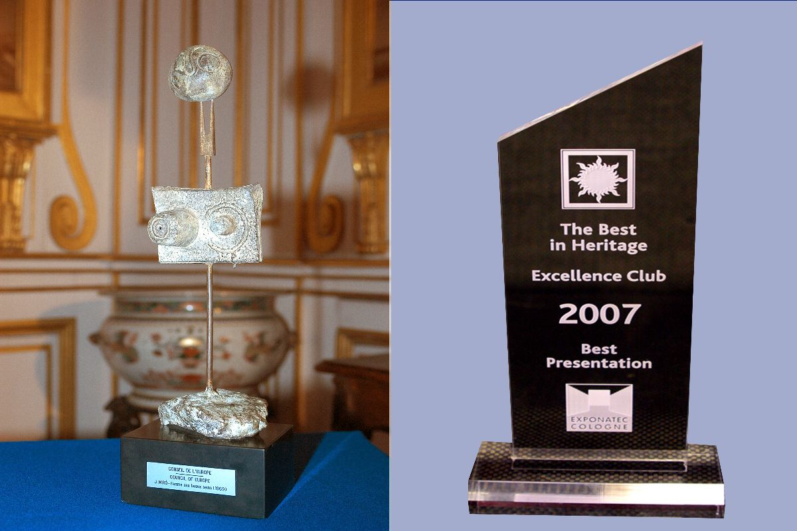
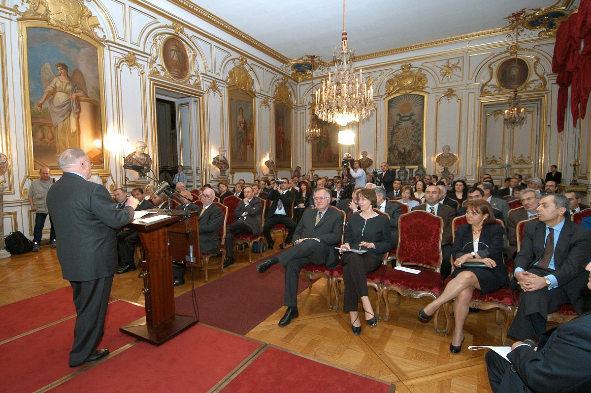
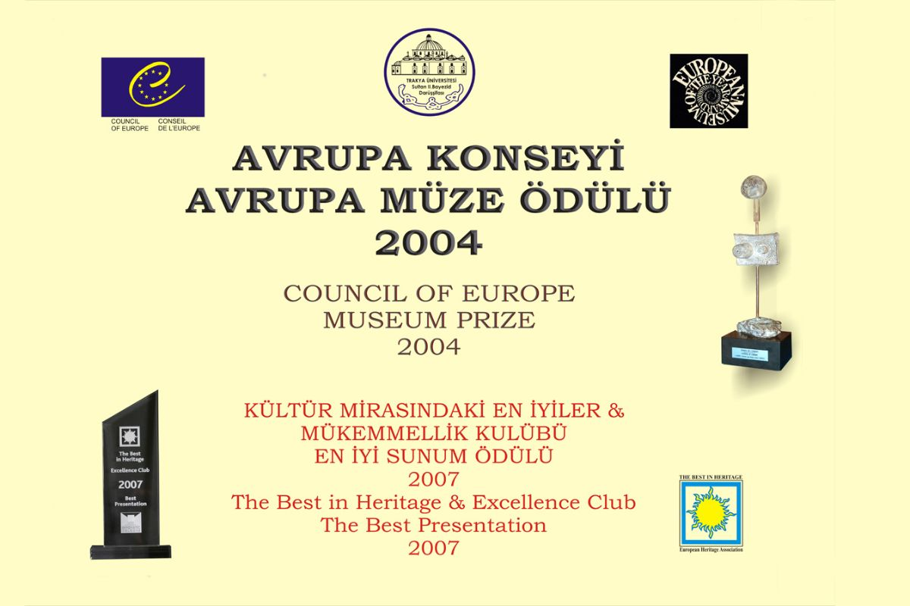

"Uluslararası Bir Başarının Hikâyesi"
Trakya Üniversitesi Sultan II. Bayezid Külliyesi Sağlık Müzesi, kuruluşundan yalnızca 7 yıl sonra Avrupa'nın en prestijli müzecilik ödüllerinden biri olan Avrupa Konseyi 2004 Yılı Avrupa Müze Ödülü'nü kazanarak büyük bir başarıya imza atmıştır. Ödül kararı, Konsey Başkanı Peter Schieder tarafından Müze Müdürü Enver Şengül'e resmi yazı ile bildirilmiştir.

Avrupa Konseyi Parlamento Meclisi'nin resmi yazısında ödül gerekçeleri şu üç maddeyle özetlenmiştir:
Avrupa Konseyi Parlamento Meclisi Resmi Yazısı
Sayın Şengül,
Parlamento Meclisi'nin Kültür Bilim ve Eğitim Komitesinin 2004 Avrupa Konseyi Müze Ödülünü Sağlık Müzesi'ne verilmesine karar verdiğini onaylamak amacıyla size yazmaktan mutluluk duyuyorum. Bu ödülün verilmesindeki etkenler arasında, ruhsal bozukluğun psikolojik hassasiyeti konusuna müzenizin özellikle başarılı ve örnek yaklaşımı olmuştur. Ayrıca müzenizin doğu ve batı kültürleri arasında daha fazla köprü görevi yapabileceği coğrafi konumu da etkili olmuştur.
Ödül, Palais des Rohan, Strasbourg'da 27 Nisan 2004 akşamında düzenlenecek olan törende takdim edilecektir. Belgenizi ve kupanızı (Joan Miro tarafından yapılan bir heykel) almak için törene katılabileceğinizi umuyorum. Nakit para ödülünüzde müzenizin banka hesabına yatırılacaktır. Daha fazla bilgi için Mr. Christopher Grayson ile temas edebilirsiniz. Müzenizin başarısından dolayı sizi içtenlikle kutluyorum.
Saygılarımla,
Peter Schieder - Meclis Başkanı
Trakya Üniversitesi Sultan II. Bayezid Külliyesi Sağlık Müzesi, 27 Nisan tarihinde Fransa'nın Strasbourg kentinde düzenlenen törenle ödülünü aldı. Ülkemizin ve Edirne'nin tanıtımı açısından oldukça önemli olan bu ödülü almak için Strasbourg'a giden Trakya Üniversitesi Rektörü Prof. Dr. Osman İnci, Müzenin Kurucusu Yrd. Doç. Dr. Ratıp Kazancıgil, Müze Müdürü Enver Şengül ve diğer üniversite temsilcileri, Strasbourg'un saray müzelerinin en önemlisi olan Palace Rohan'daki ödül törenine katıldılar.
Törende özellikle Avrupa kültürel mirasının korunması, Doğu ve Batı kültürlerinin kaynaşması ile Türkiye'nin kültürel zenginliği ve laik yapısı vurgulanmıştır. Belediye Başkanı Fabienne Keller memnuniyetini dile getirirken, Hans Woodtli ödül gerekçelerini detaylandırmıştır. Avrupa Konseyi Parlamenterler Birliği Başkanı Schieder ise Türkiye'nin kültüre verdiği öneme değinerek, bir İslam ülkesi olan Türkiye'nin, laik yapısıyla, bu tür zenginlikleri ön plana çıkarma başarısı gösterdiğini söyledi. Konuşmasının ardından Joan Miro heykeli ile diplomayı müzemiz temsilcilerine takdim etti.
| Törene Katılan Protokol | Üniversite Heyeti |
|---|---|
|
• Peter Schieder (AKPM Başkanı) • Fabienne Keller (Strasbourg Bld. Başkanı) • Hans Woodtli (Avrupa Müzeler Formu Temsilcisi) • Daryal Batıbey (Büyükelçi, Daimi Temsilci) • Zülfü Livaneli (UNESCO İyi Niyet Elçisi) • Mesut Mertcan (Avrupa Konseyi Türk Parlementerler Birliği Başkanı) |
• Prof. Dr. Osman İnci (Rektör) • Yrd. Doç. Dr. Ratıp Kazancıgil (Kurucu) • Enver Şengül (Müze Müdürü) • Üniversite Temsilcileri ve Akademisyenler |
28 Nisan'da Avrupa Konseyi Kültür Komisyonu tarafından kabul edilen heyetimiz, müzenin tedavi yöntemleri üzerine kapsamlı bir oturum gerçekleştirmiştir. Buradaki oturumda Zülfü Livaneli, üniversite heyetini yalnız bırakmadı. Temaslar esnasında hem Avrupa Konseyi Binası hem de ödül töreninin yapıldığı Rohan Sarayı'nda açılan Edirne'yi, Üniversiteyi ve müzeyi tanıtıcı sergiler büyük ilgi görmüştür.
5–8 Mayıs tarihlerinde Atina'da düzenlenen ve 48 ülkeden 58 müzenin katıldığı Avrupa Müze Forumu'nda müzemiz, ilk sunum yapan kurum olma onuruna erişmiştir. Foruma ilk görüşmeci olarak davet edilen Sağlık Müzesi'nin sunumu oldukça başarılı bulundu.

Sağlık Müzesi'nin elde ettiği diğer önemli uluslararası ödül, Avrupa Kültürel Miras Birliği ve Kültürel Mirastaki En İyiler (The Best in Heritage) ve Mükemmellik Kulübü tarafından verilen "En İyi Sunum Ödülü"dür.
Her yıl Avrupa genelinde değişik kategorilerde ödül alan 14 ayrı ülkeden gelen 17 müze arasında "En İyi Sunum Ödülü"nü kazanma başarısı göstermiştir. Almanya'nın Köln kentinde yapılan ve Norveç (2), Portekiz, İngiltere (2), Avusturya, İsrail, Estonya (2), Rusya, Almanya, Hırvatistan, Yunanistan, Danimarka, İspanya ve Litvanya'dan gelen ödüllü müzeler, 4 gün süreyle kendilerini tanıtan stantlar açmış ve sunumlar yapmıştır.

Ödül töreninde ilk konuşmayı Köln Kent Konseyi Sanat ve Kültürel İlişkiler Komitesi Başkanı Dr. Lothar Theodor Lemper yapmıştır. Ardından sırasıyla Avrupa Kültürel Miras Birliği ve Mükemmellik Kulübü adına Tomislav Šola, Europa Nostra temsilcisi Prof. Emil Hadler, ICOM (Uluslararası Müzeler Konseyi) Avrupa Başkanı Udo Gößwald, Alman Müzeler Birliği Başkanı Dr. Michael Eissenhauer ve Avrupa Müze Forumu (EMF) temsilcisi Stephan Harrison birer konuşma yapmıştır.
Trakya Üniversitesi Sultan II. Bayezid Külliyesi Sağlık Müzesi, Rektör Yardımcısı Prof. Dr. Beyhan Karamanlıoğlu başkanlığındaki bir çalışma grubuyla temsil edilmiştir. Müze Müdürü Enver Şengül ve Müze Uluslararası İlişkiler Koordinatörü Nehir Ağırseven'in hazırladığı sunuma Kültür ve Turizm Bakanlığı da destek vermiştir. Edirne Devlet Türk Müziği Korosu Şefi Yıldıray Öztürk ve tambur sanatçısı Reyhan İllez de geçmişte tedavide kullanılan klasik Türk müziği eserleriyle sunuma eşlik etmiştir.
| Sunum Ekibi ve Sanatçılar | Uluslararası Temsilciler |
|---|---|
|
• Prof. Dr. Beyhan Karamanlıoğlu (Rektör Yrd.) • Enver Şengül (Müze Müdürü) • Nehir Ağırseven (Uluslararası Koor.) • Yıldıray Öztürk (Koro Şefi) • Reyhan İllez (Tambur Sanatçısı) |
• Dr. Lothar Theodor Lemper (Köln Konseyi) • Tomislav Šola (Kültürel Miras Birliği Bşk.) • Udo Gößwald (ICOM Avrupa Başkanı) • Stephan Harrison (EMF Temsilcisi) |
Sağlık Müzesi, Hırvatistan’ın Dubrovnik kentinde Avrupa Kültürel Miras Birliği’nin düzenlediği Ödüllü Müzeler Buluşması’nda en iyi ikinci sunumu gerçekleştirmiş, (2006), Merkezi Edirne’de bulunan Güneydoğu Avrupa Gazeteciler Derneği’nce verilen Yılın Başarı Ödülü’ne layık görülmüş (2008) ve Uluslararası Üniversite Müzeleri Birliği Platformu tarafınca verilen 2017 Yılı Üniversite Müzeleri Ödülü’nü de alma başarısı göstermiştir.
| Kurum / Lokasyon | Başarı Özeti |
|---|---|
| UNESCO | Dünya Geçici Miras Listesi: Külliyenin tarihi ve mimari değerinin evrensel tescili. |
| Dubrovnik / Hırvatistan | Dünya Ödüllü Müzeler Buluşması: En İyi İkinci Sunum Ödülü. |
| Gazeteciler Derneği | Güneydoğu Avrupa Gazeteciler Derneği: Yılın Başarı Ödülü. |
| Kültürel Miras Birliği | Uluslararası Temsil ve Mükemmellik Sertifikaları. |
.jpg)
.jpg)
.jpg)
.jpg)
.jpg)
.jpg)
.jpg)
.jpg)
.jpg)
.jpg)
.jpg)
.jpg)
.jpg)
.jpg)
.jpg)
.jpg)
.jpg)
.jpg)
.jpg)
.jpg)
.jpg)
.jpg)
← Kaydırın veya ok tuşlarını kullanın →